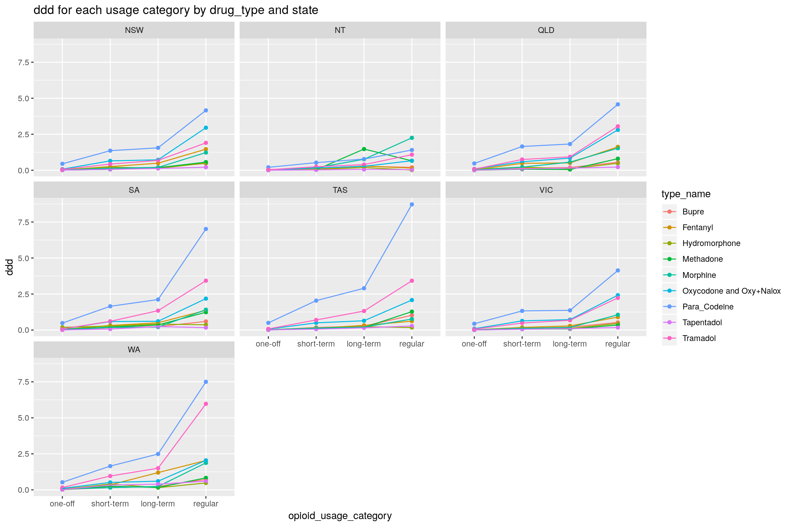
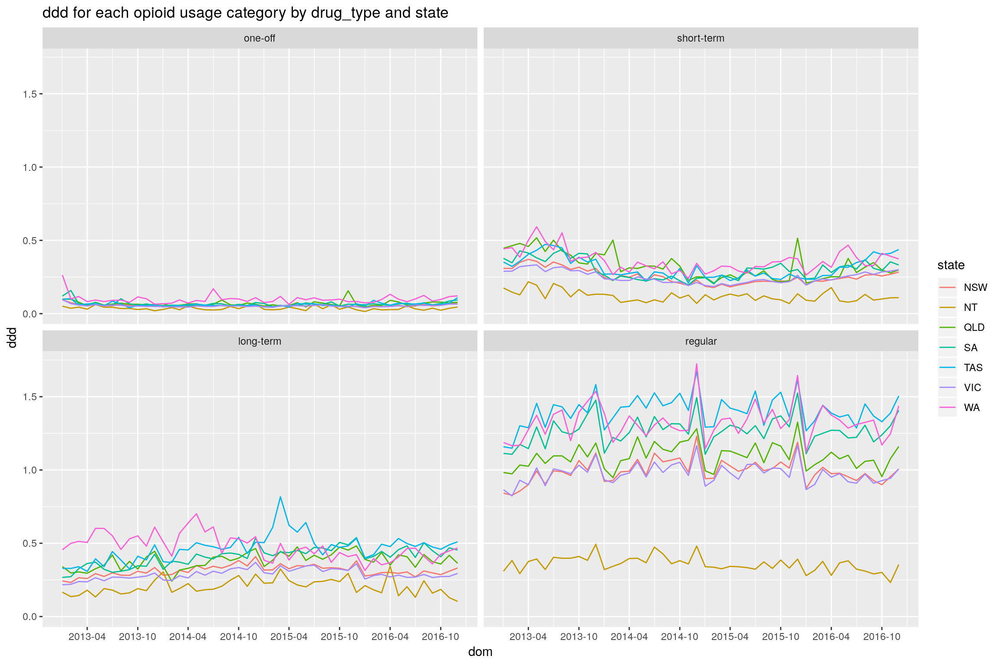
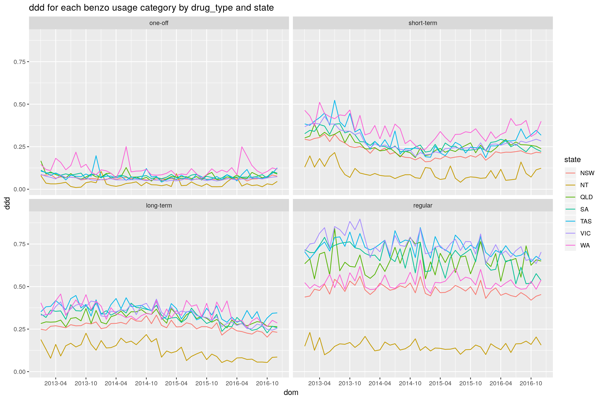
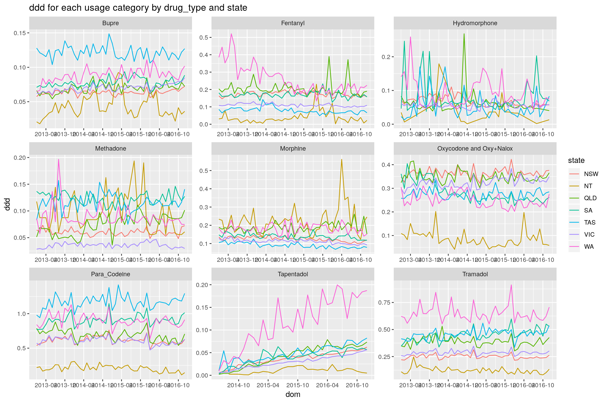
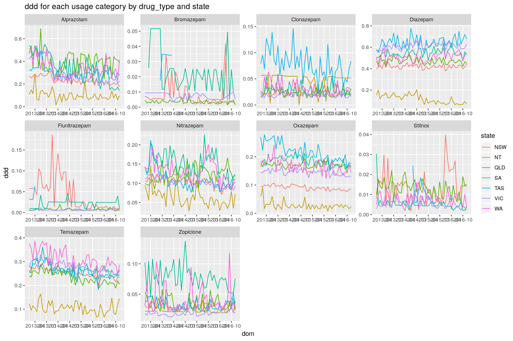

All Australia Benzo and Opioid Basic Stats
Mofi Islam and Dennis Wollersheim
2018-04-30
Last updated: 2019-01-22
workflowr checks: (Click a bullet for more information)-
✔ R Markdown file: up-to-date
Great! Since the R Markdown file has been committed to the Git repository, you know the exact version of the code that produced these results.
-
✔ Environment: empty
Great job! The global environment was empty. Objects defined in the global environment can affect the analysis in your R Markdown file in unknown ways. For reproduciblity it’s best to always run the code in an empty environment.
-
✔ Seed:
set.seed(20190107)The command
set.seed(20190107)was run prior to running the code in the R Markdown file. Setting a seed ensures that any results that rely on randomness, e.g. subsampling or permutations, are reproducible. -
✔ Session information: recorded
Great job! Recording the operating system, R version, and package versions is critical for reproducibility.
-
Great! You are using Git for version control. Tracking code development and connecting the code version to the results is critical for reproducibility. The version displayed above was the version of the Git repository at the time these results were generated.✔ Repository version: 078fc07
Note that you need to be careful to ensure that all relevant files for the analysis have been committed to Git prior to generating the results (you can usewflow_publishorwflow_git_commit). workflowr only checks the R Markdown file, but you know if there are other scripts or data files that it depends on. Below is the status of the Git repository when the results were generated:
Note that any generated files, e.g. HTML, png, CSS, etc., are not included in this status report because it is ok for generated content to have uncommitted changes.Ignored files: Ignored: data/cache/ Ignored: graphics/
Expand here to see past versions:
| File | Version | Author | Date | Message |
|---|---|---|---|---|
| Rmd | 078fc07 | Dennis Wollersheim | 2019-01-22 | wflow_publish(“analysis/basicStats.Rmd”) |
| Rmd | 937e024 | Dennis Wollersheim | 2019-01-22 | push |
| html | 937e024 | Dennis Wollersheim | 2019-01-22 | push |
| html | 868f42a | Dennis Wollersheim | 2019-01-22 | Build site. |
| Rmd | 18e04bb | Dennis Wollersheim | 2019-01-22 | wflow_publish(“analysis/basicStats.Rmd”) |
Methods
The data is from the PBS prescribing data. In this dataset, we have every opioid and benzodiazepine prescription for a 10% sample of the population, made in the period 2013-2016. In a single prescription, we have a date of supply, a drug type and strength, and the number of pills. Using the WHO DDD drug classification, we determine the total DDD for each prescription, and then we estimate the end day of the prescription to be the start day + totalDDD, rounded to the nearest day. This start and end data comprise the prescription period.
Variables
Independent
- LGA level variables
- SEIFA
- urbanisation
- census data - english language, 2 person household
- Person level variables
- gender
- age groups
- drug of choice
- user type
- lga
- Script level variables
- month of supply
- drug type - drug name
- benzo type
- opioid type
dependent variables
- benzo and opioid usage (scripts / ddd / number of users / ddd per user / scripts per user )
- lga level ddd
- usage category
Number of users using for number of quarters, for both drug categories
| nquarter | benzo_n_quarter | opioid_n_quarter | benzo_n_quarter_pct | opioid_n_quarter_pct |
|---|---|---|---|---|
| 1 | 146335 | 342040 | 46.15 | 52.06 |
| 2 | 50042 | 129579 | 15.78 | 19.72 |
| 3 | 26313 | 57058 | 8.30 | 8.68 |
| 4 | 16835 | 29994 | 5.31 | 4.57 |
| 5 | 12257 | 18112 | 3.87 | 2.76 |
| 6 | 9458 | 12763 | 2.98 | 1.94 |
| 7 | 7952 | 9486 | 2.51 | 1.44 |
| 8 | 6679 | 7357 | 2.11 | 1.12 |
| 9 | 5522 | 6125 | 1.74 | 0.93 |
| 10 | 5009 | 5330 | 1.58 | 0.81 |
| 11 | 4376 | 4617 | 1.38 | 0.70 |
| 12 | 3920 | 4291 | 1.24 | 0.65 |
| 13 | 3591 | 3998 | 1.13 | 0.61 |
| 14 | 3848 | 4094 | 1.21 | 0.62 |
| 15 | 4188 | 4675 | 1.32 | 0.71 |
| 16 | 10788 | 17458 | 3.40 | 2.66 |
Percentages of of users within drug category by age group

Expand here to see past versions of quarters_by_age-1.png:
| Version | Author | Date |
|---|---|---|
| 937e024 | Dennis Wollersheim | 2019-01-22 |
| 868f42a | Dennis Wollersheim | 2019-01-22 |
| opioid_usage_category | 0-19 | 20-44 | 45-64 | 65+ |
|---|---|---|---|---|
| one-off | 7.35 | 42.74 | 29.95 | 19.96 |
| short-term | 2.31 | 34.72 | 31.65 | 31.31 |
| long-term | 0.15 | 17.96 | 33.02 | 48.87 |
| regular | 0.03 | 10.58 | 37.01 | 52.38 |

Expand here to see past versions of quarters_by_age-2.png:
| Version | Author | Date |
|---|---|---|
| 937e024 | Dennis Wollersheim | 2019-01-22 |
| 868f42a | Dennis Wollersheim | 2019-01-22 |
| benzo_usage_category | 0-19 | 20-44 | 45-64 | 65+ |
|---|---|---|---|---|
| one-off | 3.13 | 39.23 | 33.34 | 24.29 |
| short-term | 0.87 | 29.70 | 33.40 | 36.03 |
| long-term | 0.18 | 17.31 | 29.99 | 52.52 |
| regular | 0.10 | 12.51 | 31.76 | 55.63 |

Expand here to see past versions of quarters_by_age-3.png:
| Version | Author | Date |
|---|---|---|
| 937e024 | Dennis Wollersheim | 2019-01-22 |
| 868f42a | Dennis Wollersheim | 2019-01-22 |
| both_category | 0-19 | 20-44 | 45-64 | 65+ |
|---|---|---|---|---|
| one-off | 5.00 | 38.40 | 31.25 | 25.35 |
| short-term | 0.33 | 25.37 | 31.72 | 42.58 |
| long-term | 0.06 | 16.84 | 33.82 | 49.28 |
| regular | NA | 12.01 | 41.96 | 46.04 |
Number of users percentages of age group by usage category

Expand here to see past versions of quarters_by_age_v1-1.png:
| Version | Author | Date |
|---|---|---|
| 937e024 | Dennis Wollersheim | 2019-01-22 |
| 868f42a | Dennis Wollersheim | 2019-01-22 |
| opioid_usage_category | 0-19 | 20-44 | 45-64 | 65+ |
|---|---|---|---|---|
| one-off | 80.73 | 59.94 | 50.22 | 38.36 |
| short-term | 19.09 | 36.59 | 39.88 | 45.21 |
| long-term | 0.16 | 2.34 | 5.13 | 8.71 |
| regular | 0.03 | 1.14 | 4.76 | 7.72 |

Expand here to see past versions of quarters_by_age_v1-2.png:
| Version | Author | Date |
|---|---|---|
| 937e024 | Dennis Wollersheim | 2019-01-22 |
| 868f42a | Dennis Wollersheim | 2019-01-22 |
| benzo_usage_category | 0-19 | 20-44 | 45-64 | 65+ |
|---|---|---|---|---|
| one-off | 80.13 | 56.68 | 46.68 | 33.68 |
| short-term | 18.65 | 36.03 | 39.26 | 41.93 |
| long-term | 0.89 | 4.97 | 8.35 | 14.48 |
| regular | 0.33 | 2.32 | 5.72 | 9.92 |

Expand here to see past versions of quarters_by_age_v1-3.png:
| Version | Author | Date |
|---|---|---|
| 937e024 | Dennis Wollersheim | 2019-01-22 |
| 868f42a | Dennis Wollersheim | 2019-01-22 |
| both_category | 0-19 | 20-44 | 45-64 | 65+ |
|---|---|---|---|---|
| one-off | 99.34 | 93.18 | 88.93 | 82.97 |
| short-term | 0.65 | 6.03 | 8.84 | 13.65 |
| long-term | 0.02 | 0.59 | 1.39 | 2.32 |
| regular | NA | 0.21 | 0.84 | 1.06 |
Number of users percentages of usage category by state for each age group
** this should be standardized because population distribution varies so much between states

Expand here to see past versions of category_by_state-1.png:
| Version | Author | Date |
|---|---|---|
| 937e024 | Dennis Wollersheim | 2019-01-22 |
| 868f42a | Dennis Wollersheim | 2019-01-22 |

ddd of each drug type by state and usage category
Warning: Column `age` joining factor and character vector, coercing into character vectorWarning: Column `age` joining character vector and factor, coercing into character vector
ddd per month for each state and age group
state mean from lga level standardisation
Warning: Column `age` joining factor and character vector, coercing into character vectorWarning: Column `age` joining character vector and factor, coercing into character vector
Expand here to see past versions of ddd_and_category_by_state-1.png:
| Version | Author | Date |
|---|---|---|
| 937e024 | Dennis Wollersheim | 2019-01-22 |
| 868f42a | Dennis Wollersheim | 2019-01-22 |
Warning: Column `age` joining factor and character vector, coercing into character vector
Warning: Column `age` joining character vector and factor, coercing into character vector
ddd per month for each state and drug_type
state mean from lga level standardisation
Warning: Column `age` joining factor and character vector, coercing into character vectorWarning: Column `age` joining character vector and factor, coercing into character vector
Expand here to see past versions of ddd_and_type_by_state-1.png:
| Version | Author | Date |
|---|---|---|
| 937e024 | Dennis Wollersheim | 2019-01-22 |
| 868f42a | Dennis Wollersheim | 2019-01-22 |
Warning: Column `age` joining factor and character vector, coercing into character vector
Warning: Column `age` joining character vector and factor, coercing into character vector
Expand here to see past versions of ddd_and_type_by_state-2.png:
| Version | Author | Date |
|---|---|---|
| 937e024 | Dennis Wollersheim | 2019-01-22 |
| 868f42a | Dennis Wollersheim | 2019-01-22 |
Session information
R version 3.4.4 (2018-03-15)
Platform: x86_64-pc-linux-gnu (64-bit)
Running under: Ubuntu 18.04.1 LTS
Matrix products: default
BLAS: /usr/lib/x86_64-linux-gnu/openblas/libblas.so.3
LAPACK: /usr/lib/x86_64-linux-gnu/libopenblasp-r0.2.20.so
locale:
[1] LC_CTYPE=en_AU.UTF-8 LC_NUMERIC=C LC_TIME=en_AU.UTF-8 LC_COLLATE=en_AU.UTF-8 LC_MONETARY=en_AU.UTF-8 LC_MESSAGES=en_AU.UTF-8 LC_PAPER=en_AU.UTF-8
[8] LC_NAME=C LC_ADDRESS=C LC_TELEPHONE=C LC_MEASUREMENT=en_AU.UTF-8 LC_IDENTIFICATION=C
attached base packages:
[1] grid stats4 parallel stats graphics grDevices utils datasets methods base
other attached packages:
[1] bindrcpp_0.2.2 keyring_1.1.0 RPostgreSQL_0.6-2 DBI_1.0.0 spbabel_0.4.8 sp_1.3-1 sf_0.6-3 mapview_2.4.0
[9] tmaptools_2.0 tmap_2.0 tictoc_1.0 forcats_0.3.0 dplyr_0.7.8 purrr_0.2.5 readr_1.1.1 tidyr_0.8.1
[17] tibble_1.4.2 ggplot2_3.1.0 tidyverse_1.2.1 multidplyr_0.0.0.9000 IRanges_2.12.0 S4Vectors_0.16.0 BiocGenerics_0.24.0 fuzzyjoin_0.1.4
[25] DataCache_0.9 wrapr_1.5.1 readstata13_0.9.2 lubridate_1.7.4 knitr_1.20 stringr_1.3.1 magrittr_1.5 seas_0.5-2
[33] MASS_7.3-50 workflowr_1.1.1 nvimcom_0.9-75
loaded via a namespace (and not attached):
[1] colorspace_1.3-2 class_7.3-14 gdalUtils_2.0.1.14 leaflet_2.0.1 rgdal_1.3-3 rprojroot_1.3-2 satellite_1.0.1 base64enc_0.1-3 dichromat_2.0-0
[10] rstudioapi_0.7 xml2_1.2.0 codetools_0.2-15 R.methodsS3_1.7.1 jsonlite_1.5 broom_0.5.0 png_0.1-7 R.oo_1.22.0 rgeos_0.3-28
[19] shiny_1.1.0 compiler_3.4.4 httr_1.3.1 backports_1.1.2 assertthat_0.2.0 lazyeval_0.2.1 cli_1.0.0 later_0.7.3 htmltools_0.3.6
[28] tools_3.4.4 gtable_0.2.0 glue_1.3.0 Rcpp_1.0.0 cellranger_1.1.0 raster_2.6-7 nlme_3.1-137 iterators_1.0.10 crosstalk_1.0.0
[37] lwgeom_0.1-4 rvest_0.3.2 mime_0.5 XML_3.98-1.12 scales_1.0.0 hms_0.4.2 promises_1.0.1 RColorBrewer_1.1-2 yaml_2.1.19
[46] stringi_1.2.3 highr_0.7 foreach_1.4.4 spDataLarge_0.2.7.3 e1071_1.6-8 spData_0.2.9.0 rlang_0.3.0.1 pkgconfig_2.0.2 evaluate_0.10.1
[55] lattice_0.20-35 bindr_0.1.1 labeling_0.3 htmlwidgets_1.2 tidyselect_0.2.5 plyr_1.8.4 R6_2.3.0 pillar_1.3.0 haven_1.1.2
[64] whisker_0.3-2 withr_2.1.2 units_0.6-0 modelr_0.1.2 crayon_1.3.4 KernSmooth_2.23-15 rmarkdown_1.10 readxl_1.1.0 git2r_0.23.0
[73] webshot_0.5.0 digest_0.6.15 classInt_0.2-3 xtable_1.8-2 httpuv_1.4.5 R.utils_2.6.0 munsell_0.5.0 viridisLite_0.3.0 This reproducible R Markdown analysis was created with workflowr 1.1.1